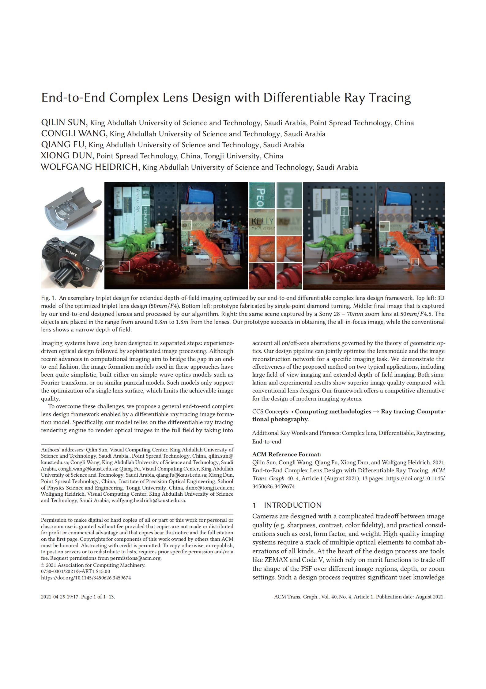
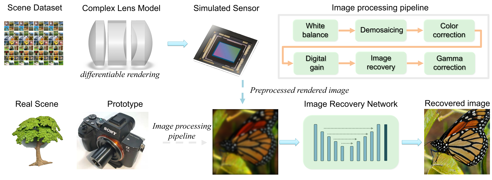

End-to-End Complex Lens Design with Differentiable Ray Tracing
End-to-End Complex Lens Design with Differentiable Ray Tracing
An exemplary triplet design for extended depth-of-field imaging optimized by our end-to-end differentiable complex lens design framework. Top left: 3D model of the optimized triplet lens design (50mm/F4). Bottom left: prototype fabricated by single-point diamond turning. Middle: final image that is captured by our end-to-end designed lenses and processed by our algorithm. Right: the same scene captured by a Sony 28-70mm zoom lens at 50mm/F4.5. The objects are placed in the range from around 0.8m to 1.8m from the lenses. Our prototype succeeds in obtaining the all-in-focus image, while the conventional lens shows a narrow depth of field.
|
Imaging systems have long been designed in separated steps:
experience-driven optical design followed by sophisticated image
processing. Although recent advances in computational imaging aim to
bridge the gap in an end-to-end fashion, the image formation models
used in these approaches have been quite simplistic, built either on
simple wave optics models such as Fourier transform, or on similar
paraxial models. Such models only support the optimization of
a single lens surface, which limits the achievable image quality.
To overcome these challenges, we propose a general end-to-end complex
lens design framework enabled by a differentiable ray tracing image
formation model. Specifically, our model relies on the differentiable
ray tracing rendering engine to render optical images in the full
field by taking into account all on/off-axis aberrations governed by
the theory of geometric optics. Our design pipeline can jointly
optimize the lens module and the image reconstruction network for a
specific imaging task. We demonstrate the effectiveness of the
proposed method on two typical applications, including large
field-of-view imaging and extended depth-of-field imaging. Both
simulation and experimental results show superior image quality
compared with conventional lens designs. Our framework offers a
competitive alternative for the design of modern imaging systems.
|
Paper
|  |
Qilin Sun, Congli Wang, Qiang Fu, Xiong Dun, Wolfgang Heidrich
End-to-End Complex Lens Design with Differentiable Ray-tracing
Siggraph 2021
|
Video Summary
Our camera prototype (top left) fabricated by single point dimond turing along with video summary (right).
|
End-to-end Designing Framework

|
Framework for end-to-end designing of differentiable complex lens model and reconstruction.
In each forward pass, we set up one scene from a certain point-of-view and render the image through the differentiable complex lens model. Then, the simulated images are sent to the image reconstruction network and we train the whole framework simultaneously. For the experimental stage, we directly send the preprocessed real-captures to the pre-trained network. Notice that the scene setup, initial lens design and image recovery network can be tailored to specific applications.
|
Application: Large Field-of-view Imaging

|
Evaluation of LFOV imaging in simulation.
We compare the performance of the state-of-the-art commercially available
aspherical lens Thorlabs AL2550-A, lens pairs ACA254-050-A, jointly
designed optics without modulation to flat lens LFOV19, Cooke triplet and
our end-to-end designed camera.
All the texture planes are located at 1m away from the camera, and the simulations are based on ray optics without considering diffraction. The first column shows the section view of each lens, and the second column shows the corresponding PSFs at different angles up to 30 degree. The third column shows the simulated
sensor image (top) and recovered image (bottom).
The fourth column shows the MTFs of each lens at different angles.
The PSFs and rendered simulation of AL2550-A and ACA254-050-A lenses show a strong blurring at large angles.
LFOV19 lens performs better in balancing PSF but left significant artifacts
in both measurements and reconstructions. Cooke triplet performs better than AL2550-A and ACA254-050-A but still fails at a large FOV.
Instead, our design shows a better PSF distribution, and the results have fewer artifacts. Notice that all lenses are adjusted to F4.
|

Experimental results of large field of view imaging
Experimental results of large field of view imaging with two elements
and four surfaces design. For each pair, we give the sensor measurement by
our prototype camera and the reconstructed results. Please zoom in to see
more details.
|
Application: Extended Depth of Field

|
Evaluation of extended depth of field imaging in simulation.
We compare the performance of the state-of-the-art commercially available aspherical lenses, including Thorlabs AL2550-A and ACA254-050-A.
The first row shows the MTFs of each lens before and after post-processing at different depths.
All the texture planes are placed 1m away from the camera, and the simulation is based on ray optics without considering diffraction. The second row shows the corresponding PSFs at the selected depth. The third column shows the simulated sensor image. Obviously, the PSFs of rendered simulation of AL2550-A and ACA254-050-A lenses exhibit a strong blur when out of focus.
Instead, our design shows an almost depth invariant PSF
and results with fewer artifacts. Additional results are available in the supplementary material. Notice that all lenses are adjusted to F4.
|

Experimental results of extended depth of field.
Experimental results of extended depth of field with three elements and six surfaces design. The left column shows the raw
sensor data from our design, the center column shows our
reconstruction result and the right column shows images captured by
a commercial Sony 28-70mm zoom lens adjusted to 50mm/F4.5. The
objects shown in these two figures are placed from around 0.8m to
1.8m, and we succeed in obtaining the all-in-focus image. Please zoom in to see more details.
|

{kind=link}
{kind=link}